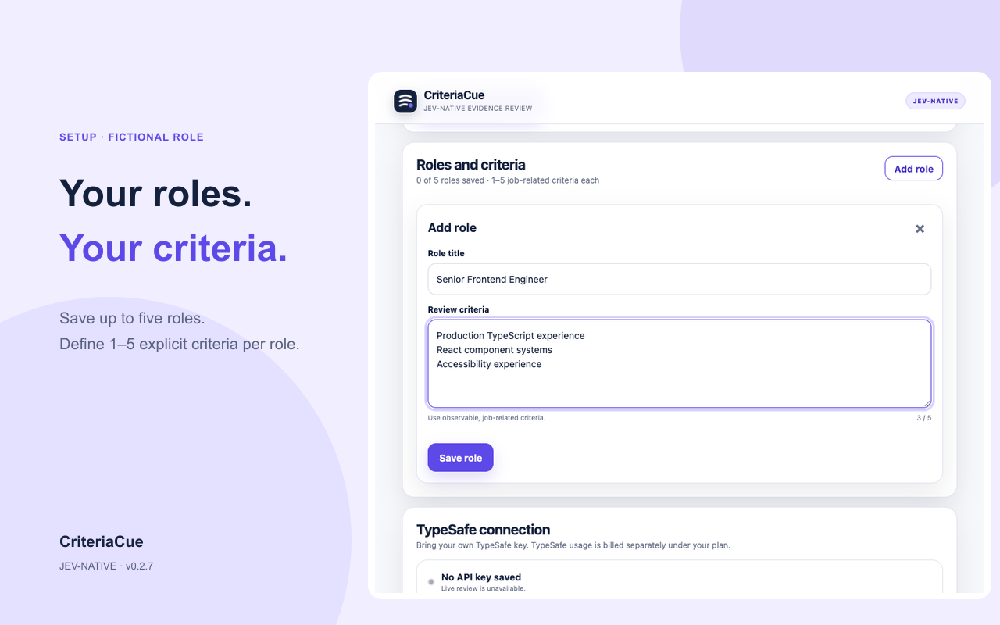
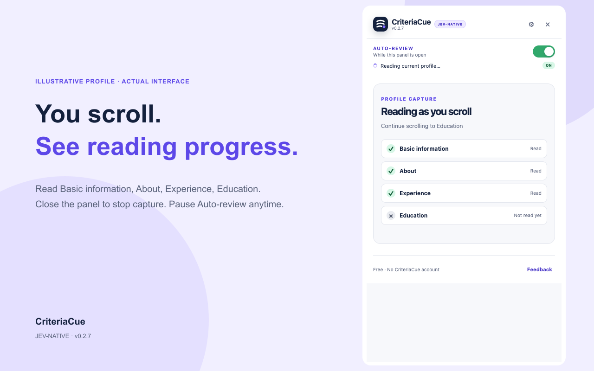
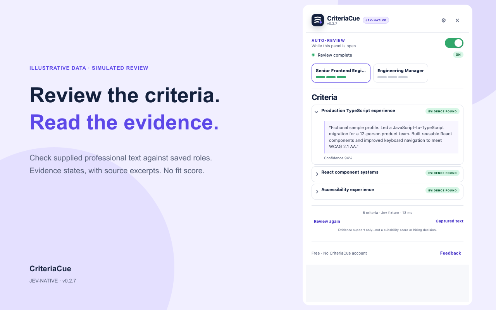
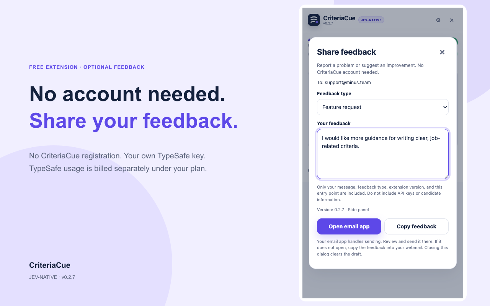

ENGINEERING
Backend Engineer
Look for concrete projects and responsibilities, beyond tool names in a skills list.
For independent technical recruiters
A profile mentions Python. What does the experience actually show?
Keep your hiring criteria beside the profile. Check the professional evidence, switch between roles, and read the source excerpts before deciding what to ask next.
Available on the Chrome Web Store · U.S. launch.
Free extension · No CriteriaCue account
Your own TypeSafe key required. TypeSafe usage is billed separately; no AI credits included.
A named service, what the person built, and a described production context.
Illustrative criterion, not a candidate assessment.
01 / THE WORKFLOW
Define what matters. Read the profile at your own pace. Keep the review beside your work.
60-second interface introduction · Illustrative data and simulated reviews · No live inference or performance demonstration.
Video could not load. The illustrated walkthrough below covers the same workflow.

Save up to five roles. Define one to five criteria for each, without uploading a full job description.

With permission granted and the panel open, follow Basic information, About, Experience and Education as they become readable.

Read source excerpts and switch roles. “Not evidenced” means the supplied text did not establish a criterion.

Pause Auto-review or close the panel to stop new capture. Send optional feedback through your own email app.
Screenshots show the v0.2.7 interface with fictional data and simulated decisions. They do not demonstrate live model accuracy or response speed.
02 / TAKE A STARTING POINT
Copy a template, adapt it to your opening, and confirm each criterion in Setup. These are prompts for evidence review, not universal hiring requirements.
ENGINEERING
Look for concrete projects and responsibilities, beyond tool names in a skills list.
DATA
Look for what the person implemented or maintained, and the context in which it ran.
PRODUCT
Look for specific decisions, collaboration and outcomes. Treat missing detail as a follow-up question.
Editable here. Nothing you type in these templates is saved or sent.
03 / BEFORE YOUR FIRST REVIEW
Install CriteriaCue from the Chrome Web Store. Available in the United States for the initial launch.
Use Chrome 142 or later. The first installation opens the separate Setup page.
Confirm your criteria. Use your own TypeSafe account and service access; separate TypeSafe charges may apply.
Choose “Allow LinkedIn access.” Open an authorized individual LinkedIn profile and the CriteriaCue side panel. Scroll through Experience and Education. Auto-review starts when the required sections have been read and stabilized.
The extension itself is free and has no CriteriaCue registration. Live AI review needs your own TypeSafe key. TypeSafe service usage is separate, and CriteriaCue includes no AI credits.
Captured professional text and your explicit criteria are sent directly to TypeSafe for review. Role titles and profile URLs stay local. The CriteriaCue extension has no backend or analytics. This website uses limited visit and installation-link statistics, as described in its website privacy notice. Read the privacy policy for storage and service details.
No. Evidence states help you inspect supplied information. They are not candidate rankings, suitability scores or hiring decisions. Missing evidence does not prove a person lacks a skill.
Email support@minus.team. Share what you tried and what happened. Please leave out candidate details and API keys. Sending feedback does not subscribe you to marketing.
BUILT BY MINUS
Install the free extension, then make a role template your own.